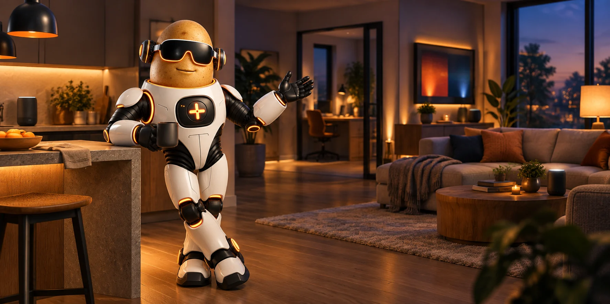

Say it naturally
Ask to turn on the lights, play something, or make an announcement. The satellite that heard you supplies the room, so Tater does not need you to repeat it.
Ask naturally from any room. Tater knows who is speaking, where they are, what they can control, and where the answer should play.
Choose one speaker, a stereo pair, or the whole house. Sendspin keeps supported native and Echo satellites together while Tater handles voice replies, announcements, and timers without losing the music or its place.
Capable Echo screens and LEDs can follow the same track with artwork, progress, color, and motion.
Little Spud keeps Tater in your pocket on iPhone and iPad or Android.
Current software is shown above for operators who want the details.Tater carries the room, speaker, identity, and intent between the pieces so ordinary requests can stay ordinary.
Ask to turn on the lights, play something, or make an announcement. The satellite that heard you supplies the room, so Tater does not need you to repeat it.
Choose a speaker, stereo pair, or mixed group. Music stays aligned while replies, timers, and announcements step in and hand the room back cleanly.
Capable screens can surface artwork, progress, weather, cameras, doorbells, and useful status while music-reactive LEDs make audio feel present.
Use a built-in wake word, train your own, or let two local detectors agree before the microphone opens. Each room keeps the settings that fit it.
Ask for an album, artist, genre, song, or recommendation and let room context choose the destination. Sendspin keeps supported native and Echo satellites together, then hands the speaker back cleanly after Tater talks.

Tater keeps the machinery in the background and the useful part close at hand.
Your assistant runtime, speech models, memory, device state, and control center can all stay on hardware you manage.
People can carry their identity, permissions, preferences, and memory between voice, the WebUI, and connected portals.
Room context helps Tater choose the right lights, camera, display, speaker, and follow-up microphone without a longer command.
Hydra plans multi-step requests while Verbas handle concrete actions across devices, media, cameras, notes, downloads, and admin tools.
Add Portals, Integrations, and Cores only when they are useful. The base assistant does not have to carry every service.
Chat, Music, Voice, devices, models, automations, system tasks, and live health share one responsive local WebUI.
Jump into the focused directories when you want a specific connection or capability.
Choose macOS, Docker, Home Assistant, Unraid, or a local Python install.
Pair satellites, update firmware, build stereo groups, and route Music Core around the house.
Connect portals and integrations, add Cores, or browse the Verbas Tater can run.
Explore Hydra, local models, Terminal tools, and the OpenAI-compatible API.
Dashboard, Chat, Music, Integrations, Verbas, Portals, Cores, Spudex, Voice, Settings, System Tasks, and runtime telemetry now share one responsive orange-and-gray interface bundled with Tater itself.